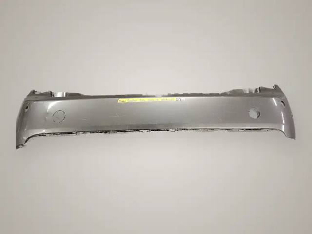
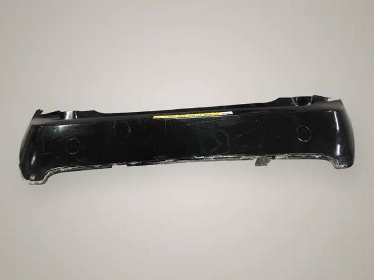
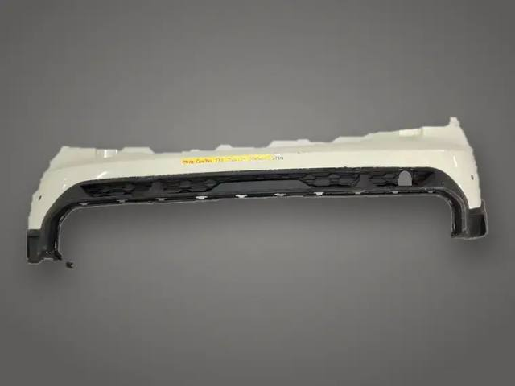

Piezas de carrocería para Mini en Panamá
16 piezas disponibles con foto real: faros, defensas, parrillas, capós, guardafangos y más. Garantía de 3 días · Efectivo, Yappy o ACH · Lunes a sábado, 8:00 a. m. a 5:00 p. m.
💬 Pregunta por tu pieza para MiniDefensa Trasera para Mini (4)

Cooper F56 2014-17#DT211

Cooper F56 2014-17#DT212

Cooper F56 2021-24#DT213
 Aceman 2025
Aceman 2025#DT247
Defensa Delantera para Mini (3)


Defensa Trasera Inferior para Mini (2)


Extensión de Defensa Delantera para Mini (2)

Estribo para Mini (1)
Capó para Mini (1)

Cover de Alógena para Mini (1)
Tapa de Baúl para Mini (1)

Refuerzo Delantero para Mini (1)
Otras marcas
AcuraAudiBMWBYDCadillacChanganCheryChevroletDaewooDaihatsuDFSKDodgeDongfengFiatFordForthingGACGeelyGMCHavalHondaHyundaiInfinitiInternationalIsuzuJACJaecooJaguarJeepJMCKaiyiKarryKIALand RoverLexusLincolnMaxusMazdaMercedes BenzMercedes-BenzMGMini CooperMitsubishiNissanOmodaOpelPeugeotPorscheRAMRenaultScionSubaruSuzukiToyotaUniversalVolkswagenVolvo